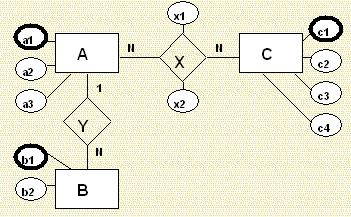
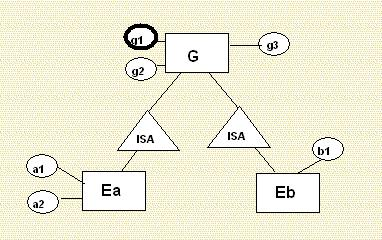

Reglas de Traslado del Modelo Entidad Relación a Tablas
Introducción
Para instrumentar un Modelo Entidad-Relación en una base de datos relacional, es necesario traducir el modelo a tablas MR (Modelo Relacional). Para definir las tablas, utilizaremos la notación:
nombretabla(nombrecolumna1, nombrecolumna2, nombrecolumna3, ... , nombrecolumnaN)Para especificar una tabla, las columnas subrayadas constituyen la llave de la tabla, es decir una columna o
conjunto de columnas tales que conocido su valor se determina unívocamente el renglón de la tabla del que se trata, es decir,
los valores de la columna o combinación de valores de las columnas subrayadas son únicos en la tabla.
Procedimiento de transferencia
- Por cada entidad se defina una tabla nombrada igual que la entidad, cuyas columnas corresponden uno a uno (y se llaman igual) a los atributos de la entidad. El identificador de la entidad corresponde a la llave primaria de la tabla. IMPORTANTE: Si no existe un identificador obtenido del análisis, en este punto se debe optar por crear una llave primaria "artificial" (un número o código creado) que garantice la unicidad de identificación de las tuplas.
- Por cada asociación del MER con cardinalidad N:N se define una tabla cuyas columnas corresponden a los identificadores de las entidades que intervienen en la asosiación, más los atributos de la asosiación misma. La llave primaria de la tabla creda corresponde a la concatenación de las llaves primarias de las tablas de las entidades participantes en las asosiación (en algunos casos, por cuestiones de eficiencia puede convenir agregar una llave primaria "artificial", sin dejar de asegurar la unicidad de la llave formada por la concatenación de las llaves de las entidades participantes)
- Por cada asociación del MER con cardinalidad 1:N se hace lo siguiente: sea A la entidad conectada con cardinalidad 1 y B la entidad conectada con cardinalidad N dadas las tablas de A y B obtenidas en el paso 1, deberá agregarse a la tabla de B, la llave primaria de la tabla de A.
- Por cada asociación del MER con cardinalidad 1:1 se hace lo siguiente: Sólo hay que agregar la llave primaria de una tabla participante a la otra (no importa el orden).
Aplicar el procedimiento en un modelo abstracto (sin asociarlo con un caso particular)
Considera el siguiente MER:
Su traducción al MR, siguiendo los pasos, sería:
A(a1, a2, a3) B(b1, b2) C(c1, c2, c3, c4)
Nota: se han subrayado a1, b1 y c1 para denotar que son la llave primaria de la tabla, por representar el identificador de la entidad.
Se agrega la tabla:
X(a1,c1,x1,x2)
Para representar la asociación X, ya que tiene cardinalidad N:N. Nótese que se incorporan los identificadores de las entidades A y B y que la concatenación de ambas, constituye la llave de la tabla X; además se incluyen como columnas de la tabla, los atributos propios de la asociación
Se modifica la tabla B, agregando la llave de la tabla A, para representar la asociación Y con cardinalidad 1:N:
B(b1,b2,a1)
Nota: a1 no forma parte de la llave primaria de B y que la asociación Y no implica la creación de una nueva tabla en el modelo.
El MR resultante es el siguiente:
A(a1,a2,a3)
B(b1,b2,a1)
C(c1,c2,c3,c4)
X(a1,c1,x1,x2)
Reglas para manejar los elementos adicionales del MER
Relaciones ISA
Las relaciones ISA son 1:1. Como caso particular, de las relaciones 1:N, las tablas que representan a las entidades generalizadores, heredan sus identificadores a las tablas que representan entidades especializadoras. La llave primaria de la entidad generalizadora y las especializadora(s) es la misma. Para el MER abstracto que se ilustra a continuación:
Los esquemas del MR correspondiente son:
G (g1, g2, g3)
Ea (g1, a1, a2)
Eb (g1, b1)
Entidades fuertes y débiles
Como casos particulares de relaciones 1:N, las entidades fuertes heredan su identificador a las entidades débiles. La llave primaria de la tabla que representa una entidad débil incluye tanto la columna que corresponde a la llave primaria de la entidad fuerte como una columna que distinga a las diferentes tuplas de la entidad débil relacionadas con una misma tupla de la entidad fuerte.
Para el MER abstracto que se muestra:

Los esquemas del MR correspondientes son:
F (f1, f2)
D (f1, d1, d2)
Roles
Cuando usamos roles para manejar relaciones reflexivas (de una entidad consigo misma) o múltiples relaciones entre una pareja de entidades, la herencia de identificadores a las tablas correspondientes se hace con el algoritmo general antes presentado, con la diferencia de que los roles se utilizan para nombrar las columnas de identificadores heredados que juegan diferentes papeles.
Para el MER abstracto que se ilustra:

Los esquemas del MR correspondientes son:
E(e1, e2)
R(e1, RolDeEe1, r1, r2)
Nota: en este caso el algoritmo general nos llevaría a una tabla con dos columnas llamadas e1, lo cual es inválido; el rol nos ayuda a definir un nombre distinto para la columna que indica que R asocia dos elementos de E.